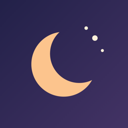
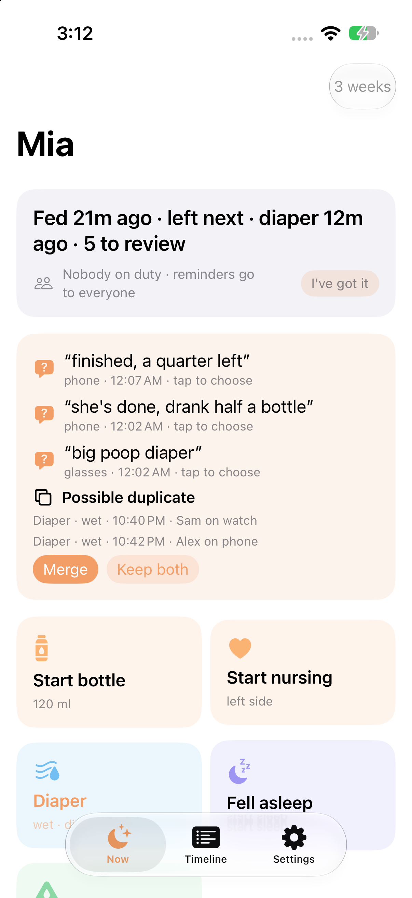
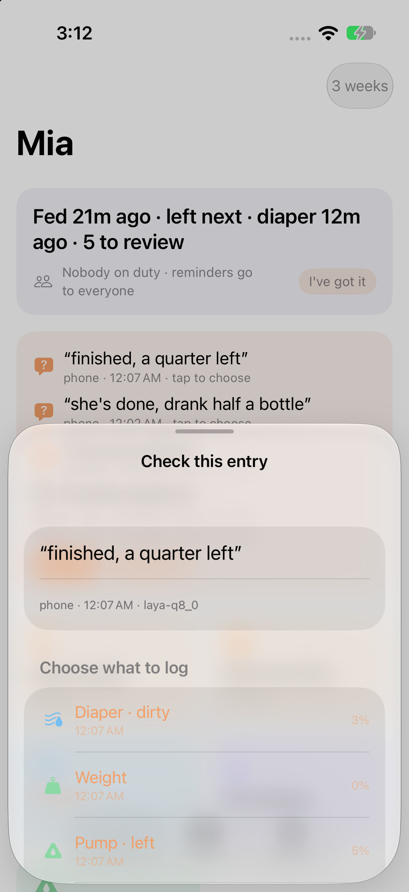
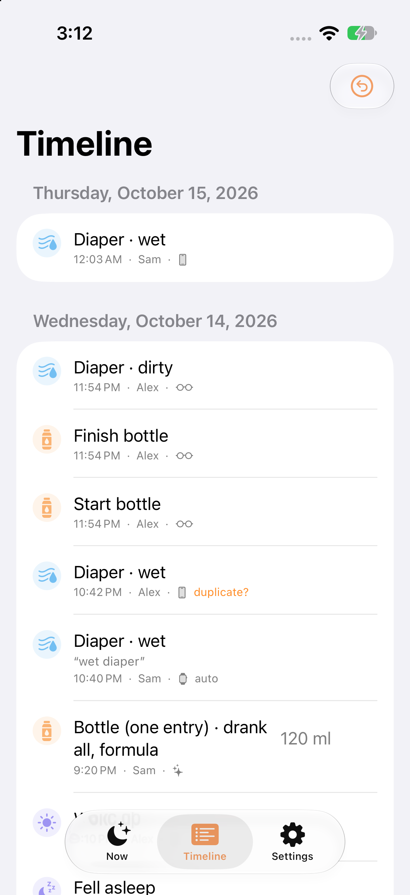
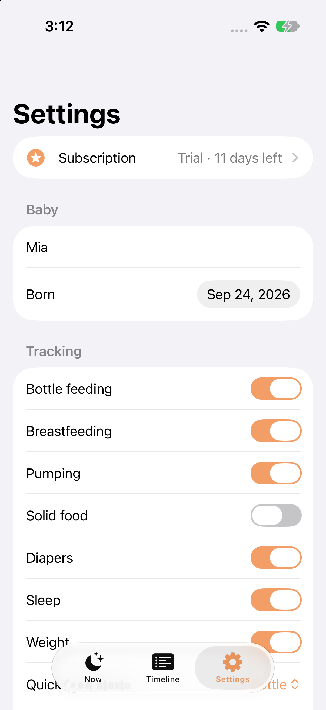
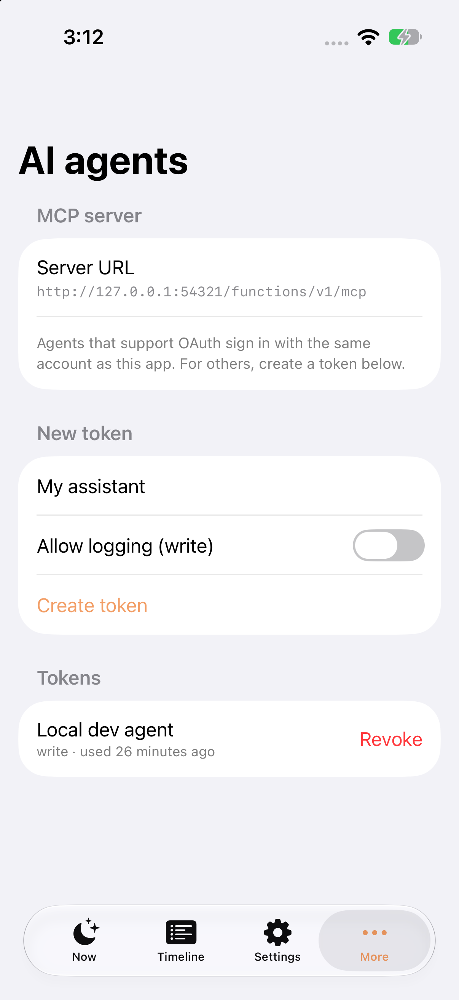
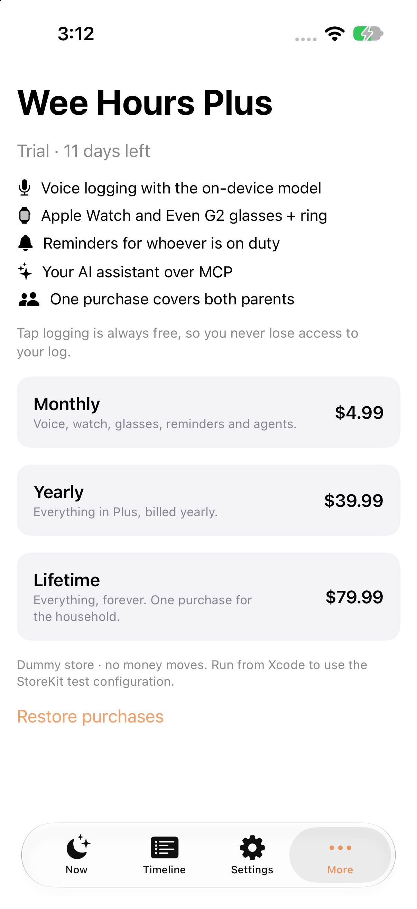
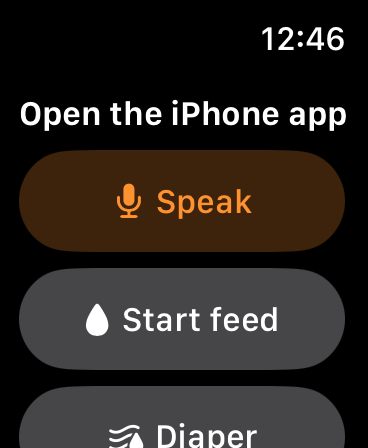

v0 walkthrough · built overnight
Wee Hours
A newborn log for 3am. You log a feed, diaper or nap in under three seconds, by voice, a tap, Siri, a widget, an Apple Watch or an Even G2 ring. Every surface writes the same typed, append-only log, and every surface shows the next decision in one line.
Same text on the phone, the widget, the Live Activity, the watch, the glasses HUD and the MCP get_status tool. It comes from one derivation, implemented in Swift and TypeScript and checked against shared fixtures.
Summary
What is in the repo
| Your decision | What it became |
|---|---|
| One unified decision model; Laya | Laya Q8 (449 MB) runs on the iPhone through a Swift port of llama.cpp's decision path (ios/LayaRuntime), with outputs identical to llama-server. A deterministic keyword model with the same interface is the fallback until the model is downloaded. |
| Supabase; Android later | Postgres schema with row-level security and append-only policies, RPCs for household, invites, billing and tokens, and a capture audio bucket. The status derivation also exists in TypeScript for MCP and the glasses (a future Android client can reuse it). |
| MCP for agent questions; the agent advises, not us | An MCP edge function returning raw facts (events, baby profile with age, status). It never aggregates or advises. Auth: the app's Supabase session, or personal access tokens (wh_…, hashed, read or write scope). |
| All voice processing on the phone; glasses audio relayed | Every voice entry is a capture. Glasses upload audio with its capture time, a household phone processes it when it opens (or on background refresh), the event id is derived from the capture id so two phones converge, and the audio is deleted. |
| All feeding modes, each optional; track weight | A type registry (spec/event-types.json) with toggleable categories (bottle, breast, pumping, solids, diaper, sleep, weight). Only enabled categories become model options. |
| Subscription + lifetime, dummy billing | StoreKit 2 with a local .storekit configuration (monthly, yearly, lifetime) plus a built-in dummy store when StoreKit has no products. One purchase covers the household; 14-day trial. |
| Easy glasses testing | scripts/glasses-sim.sh opens the official Even Hub simulator signed in; --e2e drives it through the simulator's automation API and checks the database. |
Design
Three seconds, no navigation, never a silent guess
The PRD's principles, unchanged except one: "On-device by default" became "processing on-device; glasses audio relayed temporarily", following your call on glasses voice.
The model classifies, code calculates
Laya only picks options. "A quarter left" maps to 0.75 consumed; ml = fraction × the household bottle size. Clock times (at 2:10), relative times (half an hour ago), ml/oz and kg/lb come from deterministic parsers.
Every correction is data
A pick, an edit or an undo is an event with provenance (surface, input, transcript, per-question confidence, tier, model version, capture id). That's the labeled set for the fine-tuning you planned.
Duplicates are flagged, never merged
Same type within 5 min (10 for starts) from another caregiver or surface is flagged. It doesn't count toward the status line until a parent picks Merge or Keep both, on any device.
Architecture
Many surfaces, one log
Offline first
An entry is written to SQLite before any confirmation is shown. Sync pushes the outbox (upsert by id, ignore duplicates), then pulls by a server sequence cursor. Because the log is append-only, merging means taking the union; conflicts surface as duplicate flags, never as overwrites.
One spec, two implementations
spec/event-types.json drives the Swift registry, the TypeScript core and the eval harness. spec/fixtures/status.json holds 14 derivation cases that both swift test and vitest must pass. CI fails if a copy of the spec drifts.
Event log
Append-only, with every state derived
Watch a night unfold. Nothing is updated in place: an undo, an edit or a resolution is another event, and the status line is recomputed from all of them.
Sessions
Start and finish events pair by time order, per kind (bottle, breast, sleep). A finish with no start becomes a session with an unknown start. A start that arrives late (an offline phone) re-pairs on the next derivation. Two starts in a row abandon the first rather than inventing an end.
Decision model
Laya, measured
Laya is a 0.4B ModernBERT that answers typed questions with probabilities. llama.cpp serves it only through llama-server, so I ported the decision path (prompt template, head-budget truncation, marker scoring, temperature buckets) to Swift on top of the C API. The parity test passes against the server on the same GGUF, at 0.56 s for 6 questions on a Mac.
One 13-way question vs. two short ones
Zero-shot, Laya is weak with many options and sensitive to option order. Splitting the event type into category (≤ 8 options) × phase (start / switch / finish / single) was the biggest win. 178 synthetic utterances; "calibrated" rows fit temperatures on half and report the other half.
No silent wrong entries
With the two-step design, Laya's wrong-auto-commit rate is 0%: when it's unsure, it asks. The flat design auto-committed 93% of entries and 89% of those were wrong, which is exactly what "never guess silently" exists to prevent.
Few auto-commits for now
Zero-shot confidence is low, so most entries are one tap (pick) or a short list. The PRD's ≥ 80% auto-commit target needs the fine-tuning you planned. The corrections parents make are already recorded as training data.
Keyword model
The deterministic fallback scores 93% on this set, but I wrote both the set and the keywords, so treat it as a regression test (CI gates on it), not as evidence. Real utterances will be messier.
Per-question accuracy and fitted temperatures
Why "when" is not a model question
Asked as a 5-option question ("now / ~5 / ~15 / ~30 / ~60 min ago"), Laya got 21% right. Since every entry includes it, one weak question pushed everything into full-list mode. Relative phrases are as mechanical as the clock times the PRD already parses, so they are parsed too, which raised Laya's fully-correct rate from 24% to 66%.
The two screenshots below, honestly
"She's done, drank half a bottle" put the right entry first. "Finished, a quarter left" (on-device Laya in the simulator) put Diaper first, because nothing in it says "bottle". Both went to review rather than committing, which is the policy working as intended.
iPhone
The phone stands alone
Real screenshots from the iOS simulator against the local backend and seed data (scripts/ios-screenshots.sh). The review sheet ran Laya on-device in the simulator (CPU).

Now. The status line, things to review (voice picks, duplicate flags), context-aware tiles (Finish bottle with ¼ ½ ¾ all; Switch side while nursing), hold-to-speak, and type-instead.

Review. Pick mode shows the top two, the full list shows all; dismissing keeps the transcript as a note. Shows the capture's device, time and model version.

Timeline. Who, which device, the transcript, the confidence tier, ml from fraction × bottle size, duplicate flags, swipe to undo, tap to edit (an edit supersedes).

Settings. Tracking toggles, bottle size, reminders (your intervals, with an adaptive suggestion from your last 3 days), invite QR, decision model choice. Laya and Whisper now ship inside the app (scripts/fetch-models.sh), so there is no download step.

AI agents. MCP URL, personal tokens (read or write, shown once, revocable, last-used time).

Plus. Trial status and monthly / yearly / lifetime. In this run the dummy store is shown because the app wasn't launched from Xcode.
Out of the app
App Intents: start or finish a feed, finish a bottle with an amount, log a diaper by kind, sleep toggle, switch side, "what's next" (Siri speaks the line), and speak-a-log-entry for the Action Button. The same intents power interactive widget buttons and Live Activity buttons.
Widgets & Live Activity
Home and lock-screen widgets show the line, with Feed / Wet / Dirty buttons. During an open feed or sleep, a Live Activity shows a running timer with Finish, Switch side and Woke up.
Watch
Status from the phone's application context; Feed, Diaper (kind picker), Sleep and Undo as messages; Speak records 16 kHz audio and transfers it to the phone, which transcribes and decides with the capture time.

Running in a paired watch simulator. The status line had not arrived from the phone (WatchConnectivity context) when captured, so this is unverified.
Even G2 + R1
Log without looking
The R1 supports press, double press, swipe and hold (start and release). Ring and temple share one map, and the source is recorded. Try it below; this is the same state machine as glasses/src/controller.ts, ported to the page.
| Gesture | Effect |
|---|---|
| Press | Start the household's default feed (next side for nursing) · finish the open feed |
| Double press | Diaper → swipe to the kind → press (double press cancels) |
| Swipe | Menu: asleep/awake, switch side, on duty, undo last, back |
| Hold → release | Records while held; the capture is attached to the entry you just made (within 2 min), so press-finish + "drank half" becomes one bottle entry |
Typed gestures go straight to events (through an offline outbox in the bridge's local storage). Audio becomes a WAV in the capture bucket plus a captures row for a household phone to process.
In the official simulator
Captured by scripts/glasses-sim.sh --e2e, which drives the simulator through its automation API, then checks that the backend received feed.bottle.start, feed.bottle.finish, a dirty diaper and one pending capture attached to the finish entry.
Signed in: the status line and gesture hints
Press: bottle started
Hold: listening
Release: captured for the phone
Double press, swipe: diaper kind
After: pending capture counted in the line
MCP
Facts for your agent
A Streamable-HTTP MCP server as a Supabase edge function. Tools return raw events and the profile; interpretation (e.g. "at her age, should we increase the volume?") is left to the user's own agent, as you decided.
| Tool | Returns |
|---|---|
get_status | The line, open feed, next side, last diaper, on duty, pending captures, duplicate flags |
get_baby_profile | Name, birth date, age in days, bottle size, tracking categories, caregivers |
list_events | Active entries in a time range with ml computed per row, who and via what. No totals. |
list_event_types | The closed vocabulary and field docs |
log_event · undo_event · resolve_duplicate | Writes with the same validation as the phone (write-scoped token) |
$ curl -s $MCP -H "Authorization: Bearer wh_dev_local_token" \
-d '{"jsonrpc":"2.0","id":2,"method":"tools/call",
"params":{"name":"get_status","arguments":{}}}'
{
"line": "Fed 2h30m ago · left next · diaper 1h10m ago · 1 to review",
"next_side": "left",
"last_diaper": { "at": "…", "kind": "wet" },
"duplicates_to_review": [ { "original": "d50b…", "duplicate": "3cd9…" } ]
}
Auth: a Supabase session JWT (OAuth-capable agents find the auth server through /.well-known/oauth-protected-resource), or a personal access token. Tokens are stored as SHA-256 hashes, scoped to read or write, revocable, with a last-used time.
Billing
Subscription or lifetime, per household
Products
Monthly $4.99, yearly $39.99 (one subscription group), lifetime $79.99 (non-consumable), all family-shareable, in Subscriptions.storekit, which the App scheme uses when run from Xcode.
Entitlement rules
14-day trial from household creation, then subscribed until expiry, or lifetime. One purchase unlocks both parents (stored per household in entitlements).
A judgment call to review
You said "everything requires a subscription after the trial". I kept tap logging free (the log is the parents' data and locking it out felt wrong); voice, watch, glasses, reminders, MCP and export are gated by Entitlement.allows. It's one line to change.
Dummy path: the client reports the verified StoreKit sandbox transaction through record_purchase. Production needs App Store Server Notifications or signed-transaction verification on the server. That gap is marked in the migration.
Tests & CI
What runs, and where
| Suite | What it checks | Count | Local | CI |
|---|---|---|---|---|
LogCore swift test | The 14 shared fixtures, the PRD acceptance criteria (start→finish half = one session at 50% with the right duration; "a quarter left" = 75%; undo stays in history; complete provenance; reminder fires and logging dismisses it), policy tiers, parsers, Laya prompt/layout, store, capture id convergence, voice attaching to a gesture, billing, CSV, on-duty routing | 34 | pass | macOS |
| Backend integration | Sign-in, my_household, push and pull between two phones, a capture processed by a phone | 1 | pass | opt-in |
| LayaRuntime parity | The in-process Swift port equals llama-server's /v1/systemone (±0.02) on the same GGUF | 1 | pass | needs model |
Glasses vitest | The gesture state machine, WAV encoding, the same 14 fixtures against the TS core, validation | 23 | pass | Linux |
| MCP integration | 401 + discovery, initialize, tools/list, profile, validated log_event, status, list_events, undo | 8 | pass | Linux + supabase |
| Glasses e2e | Official simulator via its automation API → the database | 1 flow | pass | local (GUI) |
| Eval regression | Keyword model on 178 utterances: type ≥ 85%, wrong auto ≤ 2% | 1 | pass | macOS |
| iOS build | App + widgets + watch for the simulator, with llama.xcframework built from a pinned llama.cpp commit (cached) | 1 | pass | macOS |
Honest status
What's verified, what isn't
verified here
- All the suites above, and the app running in the iOS simulator against local Supabase
- Laya on-device runtime: on macOS (parity) and in the iOS simulator (CPU)
- The voice pipeline end to end from typed text; Laya via llama-server and on-device
- The glasses app in the official Even Hub simulator, with backend checks
- MCP over HTTP with tokens; sync between two signed-in clients
built, not verified
- Real microphone → WhisperKit on a device (the simulator has no mic input in automation)
- Laya on an iPhone GPU (Metal) and the 1.5 s latency target on iPhone 13
- Widgets, Live Activity and Siri phrases at runtime (they compile; not screenshotted). The watch app launches in the simulator, but phone↔watch messaging is unverified
- Glasses on hardware: audio frames, ring source tagging, the Even app's network whitelist
- Google / Apple sign-in (needs the hosted project), the StoreKit sheet (needs Xcode), real push
Known gaps and next steps
- Fine-tune Laya on real household utterances (corrections are already logged), then re-run
scripts/eval.sh. The 80% auto-commit target depends on it. - Device pass: on an iPhone, check latency and memory (Laya + Whisper), a whispered-utterance test, and widget and Live Activity behavior.
- Hosted Supabase: create the project, Google and Apple providers, deploy the migrations and
mcp, App Store server verification for purchases. - Glasses on hardware, and whether to wake the phone with a silent push when a capture is uploaded (free; not implemented yet).
- Android: the spec, fixtures, Supabase API and TS core are ready to mirror; Laya runs on Android's llama.cpp unchanged.
Run it
Five commands
brew install xcodegen cmake supabase/tap/supabase scripts/dev.sh # supabase start, spec sync, llama.xcframework, Xcode project open ios/WeeHours.xcodeproj # run "App" on an iPhone simulator · parent1@example.com / newborn-dev scripts/glasses-sim.sh # glasses in the Even Hub simulator (add --e2e for the scripted run) node scripts/test-mcp.mjs # MCP checks · endpoint http://127.0.0.1:54321/functions/v1/mcp